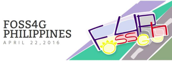
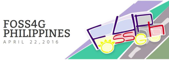

Introduction to GRASS GIS and Scripting in GRASS using Python
FOSS4G-PH 2016 workshop (April 22, 2016)
MH 210, College of Engineering, University of the Philippines Diliman, Quezon City 1191
Engr. Ben Hur S. Pintor
https://github.com/bnhr07b
bhs.pintor@gmail.com

 

GRASS GIS
GRASS GIS, commonly referred to as GRASS (Geographic Resources Analysis Support System), is a free and open source Geographic Information System (GIS) software suite used for geospatial data management and analysis, image processing, graphics and maps production, spatial modeling, and visualization. GRASS GIS is currently used in academic and commercial settings around the world, as well as by many governmental agencies and environmental consulting companies. It is a founding member of the Open Source Geospatial Foundation (OSGeo).
It is the granddaddy of most open-source and modern-day GIS with its history dating back to its development by the U.S. Army Construction Engineering Research Laboratories (CERL) way back in 1982.
WHY GRASS?
- More than 30 years of development history
- 350+ modules to manipulate raster, vector, and other spatial data; process multispectral image data; and create, manage, and store spatial data
- 100+ addons/extensions available
- Powerful Python Interface
- Open-source (GNU GPL)
- Extensive support (mailing lists, tutorials, etc)
- FREE
- FREE
- FREE
WHY NOT GRASS?
- Relatively steep learning curve
- Not as popular as proprietary GIS (ArcGIS, etc) for industry use
- Common misconception that it is NOT user-friendly.
GRASS Installation
Instructions for installation of GRASS in GNU/Linux, MS Windows, and Mac OS are available at: https://grass.osgeo.org/download/software/
- Ubuntu
- Add ubuntugis-unstable repository
- Update the software sources
- Install GRASS
sudo add-apt-repository ppa:ubuntugis/ubuntugis-unstable
sudo apt-get update
sudo apt-get install grass
- Download binaries according to your system (32bit)/(64bit))
- Install binaries (run as admin if required)
GRASS Data Structure

DATABASE
The directory where LOCATIONS are stored. Common example is ~/user/grassdata
LOCATION
A LOCATION is some geographic extent of interest that contains data sets that must all be in the same coordinate system. Every location has a PERMANENT directory which stores some basic information about the whole location, and is a good place to park base files. You can think of a location as a data library for a region of interest defined by a coordinate reference system.
MAPSET
Every GRASS session runs under the name of a MAPSET. A MAPSET may be a geographical or thematic subset of the parent LOCATION. Technically they are subdirectories under any location. Users may only select (and thus modify) a mapset that they own (i.e., have created). However, data in all mapsets for a given location can be read by anyone (unless prevented by UNIX file permissions). The "PERMANENT" mapset usually contains the read-only base maps like the elevation model, while the other locations are readable and writable by their owners. The "PERMANENT" mapset also contains some information about the location itself that is not found in other mapsets (projection info etc.), thus it must exist in every location.
Computational Region
The current region or computational region is the actual setting of the region boundaries and the actual raster resolution. As a general rule in GRASS:
- Raster maps are always imported completely at their own resolution (exception: WMS imported layers).
- Vector maps are always imported completely.
- In computations:
- Raster input maps are automatically cropped/padded and rescaled (using nearest neighbour resampling) to match the current region in order to produce the output raster map or to query values.
- Raster output maps have their bounds and resolution equal to those of the current computational region.
- Vector maps are always considered completely.
GRASS Command Structure
- g.* - general modules
- m.* - miscellaneous modules
- d.* - display modules
- r.* - raster modules
- v.* - vector modules
- i.* - imagery modules
- r3.* - 3D raster (voxel) modules
- db.* - database modules
Starting GRASS
GRASS Startup Screen
GRASS GUI
The first window is the Layer Manager which is Similar to the Table of Contents window of other GIS such as ArcGIS and QGIS. Here you can see the current layers (data) loaded into GRASS session. Adding or removing layers in the Layer Manager can be done using the Layer Manager toolbox
The other window is the Map Display which displays the layers in the Layer Manager.
For more information regarding the GUI, see: GRASS GIS Manual: wxGUI
Aside from the GUI, there are several other ways to search and send commands to GRASS. These are through the:
Command Console
Search Module
Python Shell
Sitemap
Introduction | Raster Processing and Analysis | Vector Processing and Analysis | WORKSHOP 1 | WORKSHOP 2 (Scripting)